Your one-stop solution for quality agricultural products
Welcome to Sri Lakshmi Fertilizers and Pesticides! We provide high-quality fertilizers and pesticides to enhance your agricultural yield. Our products are sourced from trusted manufacturers to ensure your crops get the best care.
Nitrogen, phosphorus, and potassium: These are primary macronutrients that plants need in larger amounts. Suitable for crops like mung beans and blueberries.
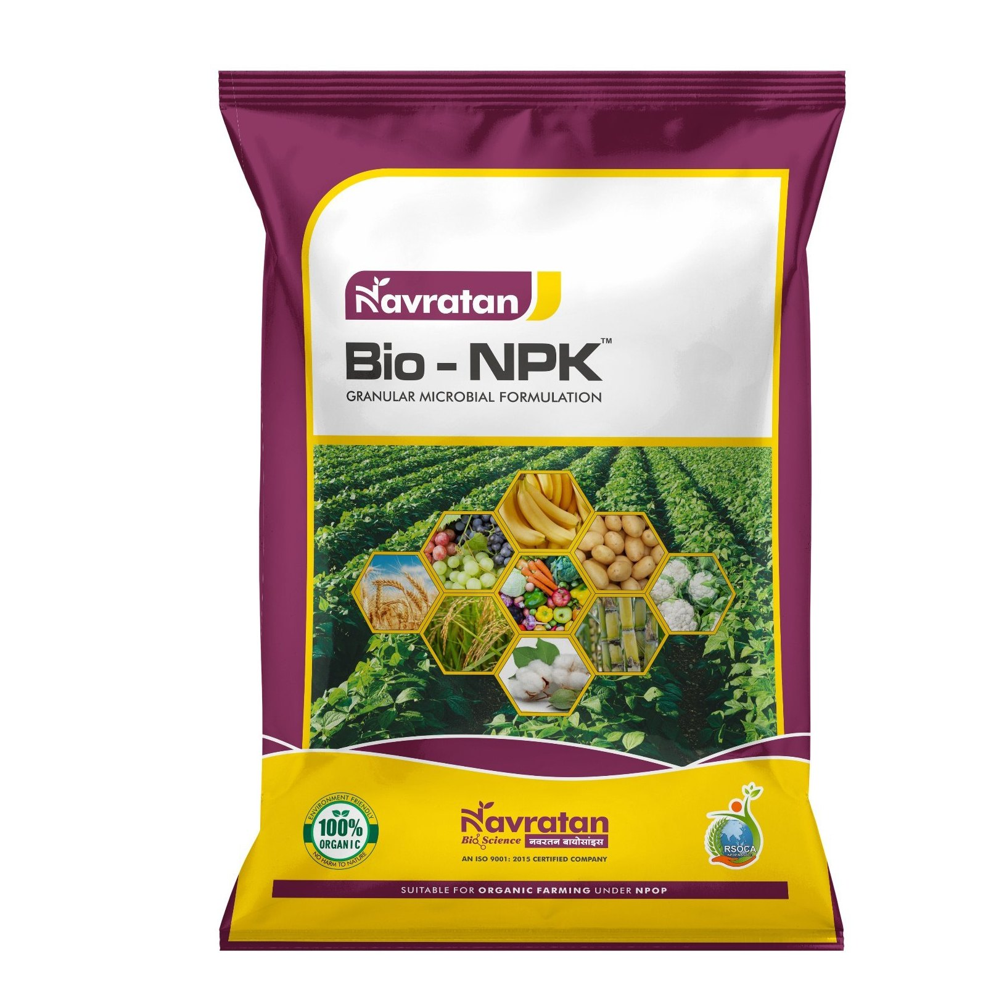Urea: A versatile fertilizer for crops like potatoes, wheat, vegetables, soybeans, and rice.
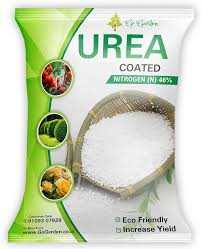Ammonium sulfate: Ideal for rice, vegetables, and fruits.
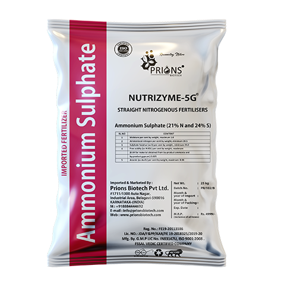Diammonium Phosphate (DAP): Provides nitrogen and phosphorus for root development, flowering, and disease resistance.
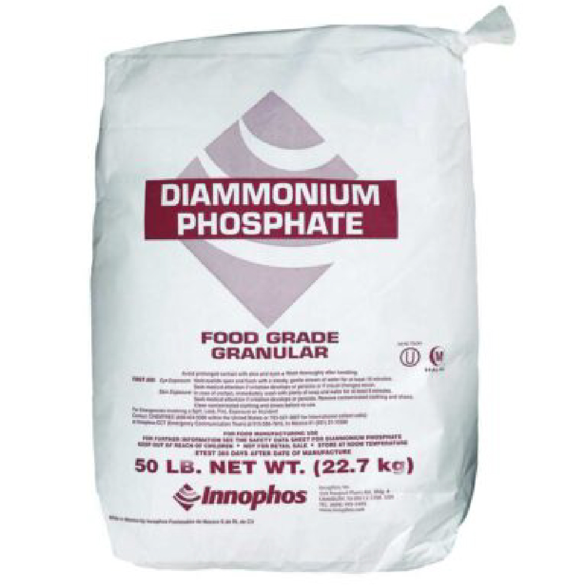28-28-0 : Use It is the most suitable fertiliser for crops like Paddy, Cotton, Chillies, Sugarcane, Vegetables.
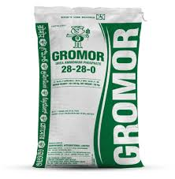20-20-0-13 : An excellent fertiliser for all crops grown in Sulphur deficient soil.
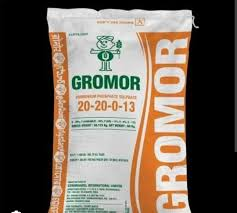Solomon : Solmon is an Pesticide designed to tackle both chewing and sucking pests in crops like cotton, vegetables, and soybean.
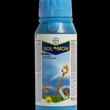Profex Super : Profex Super is primarily used to control a wide range of insect pests, including ants, cockroaches, fleas, ticks, and mosquitoes.
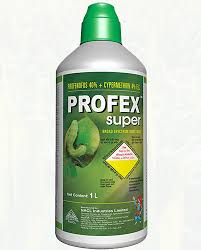Glycel :It is used to controlling all weeds including annuals, perennials, grassy, broadleaf weeds and sedges.
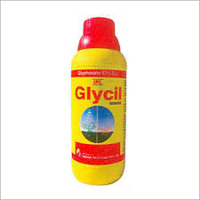Shenzi : Shenzi is a concentrated insecticide that provides long-lasting pest control for a variety of crops, including potatoes
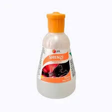Hooligan : Hooligan used to control various pests and disease carriers, such as mosquitoes, ticks, rats and mice
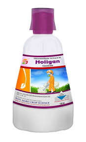Shop Address: [Betamcherla, Main Road, Nandyala Dist]
Phone: +91-9676710992
Email: srilaksmifandp@gmail.com